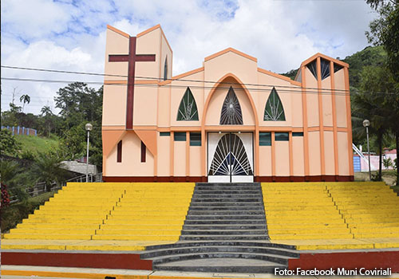

¿DONDE VISITAR EN SATIPO?
PISCINAS NATURALES PETANIA

La mano del hombre ha creado prodigios casi divinos que subyugan el corazón y las almas de quienes los contemplan pero nada, absolutamente nada, puede compararse con la magistral y artística mano de la naturaleza que cual diestra arquitecta nos recuerda nuestra verdadera dimensión con sus incomparables creaciones. Hoy tendremos la oportunidad de ver una de ellas, un lugar que muy pocos han tenido el privilegio de ver y disfrutar… En una zona de terrazas bajas que forman parte de la llanura aluvial del río Tambo y afluentes se encuentra la comunidad nativa de Betania, flanqueada por los río Tambo, el mas importante de la provincia de Satipo, y el río Samaireni, objetivo de nuestra visita.
¿DONDE VISITAR EN COVILIARI?
CAPILLA DE COVIRIALI
La Capilla de Coviriali presenta un estilo arquitectónico contemporáneo con dos torres asimétricas de líneas simples y definidas, una cóncava y la otra convexa presentando, la más alta de ellas, una cruz iluminada que ocupa casi toda la fachada de la torre, La Capilla de Coviriali presenta un estilo arquitectónico contemporáneo con dos torres asimétricas de líneas simples y definidas, una cóncava y la otra convexa presentando, la más alta de ellas, una cruz iluminada que ocupa casi toda la fachada de la torre. En el frontis se notan tres ventanas ojivales y el cornisamento de la puerta también de forma ojival con ventanas escalonadas. Fue construida en el año 2000 y se encuentra advocada al Señor de Cachuy que celebra su fiesta patronal el 01 de mayo y 20 de mayo de cada año
¿DONDE VISITAR EN LLAYLA?
ARCO IRIS

La Catarata Arco Iris se encuentra ubicada a poca distancia de la carretera que conduce hacia Puerto Ocopa en una pequeña quebrada rodeada de abundante vegetación típica de selva alta. La primera Tiene una altura de 15 mt aprox. y sus frescas aguas que alcanzan una temperatura de 23°C caen hacia un pozo de poco mas de 2 mt de profundidad que se ha formado en la base desde donde rebalsa a través de un pequeño tobogán de piedra hasta una poza en la que se pueden bañar los visitantes, arcoiris es un espacio para disfrutar de la flora y fauna de la selva central , cuenta con cascadas donde se forma el arco iris debido a los rayos solares al caer sobre la cascada , un lugar magico donde se puede descansar y respirar el aire puro no pierdas la oportunidad de conocer este lugar ubicado en mazamari km 32 desde satipo a puerto ocopa.
¿DONDE VISITAR EN MAZAMARI?
RAPEL CAÑON DE SHUCTO

Sin duda, Junín es una tierra próspera que ofrece atractivos naturales que parecen salidos de otro planeta. Entre ellos, se encuentra el Cañón de Shucto, una formación rocosa que se caracteriza por sus enormes paredes rocosas que proporcionan un paisaje maravilloso. Asimismo, estas majestuosas paredes que alcanzan los 70 metros de altura contrastan con la belleza del río Piñascocha, el cual se encuentra a un lado de estas formaciones. A esto se suma una extraordinaria vegetación, que se encarga de darle color a este mágico paisaje peruano. Por este motivo, una de las mejores actividades es caminar a través de este cañón, y descubrir sus encantos. Por otro lado, el Cañón de Shucto se sitúa en Canchayllo, un hermoso distrito de la provincia de Jauja. Este lugar es popular por tener increíbles destinos naturales como la Reserva Paisajística Nor Yauyos – Cochas, una importante área protegida que cuenta con una extensión de 221.268 hectáreas. Además, dentro de este territorio se hallan los nevados de Pariacaca, Tunshu y Runshu.
¿DONDE VISITAR EN PAMPA HERMOSA
SANTUARIO NACIONAL DE PUNTA HERMOSA

Santuario Nacional ubicado entre las provincias de Tarma y Chanchamayo, que fue creada para proteger la diversidad biológica y los ecosistemas que los contienen, posee una comunidad relicta de singular flora y fauna endémicas, es el hábitat del único bosque de cedro de altura Cedrella lilloi que existe en el Perú, además de gallitos de las rocas, osos de anteojos, junto a tucanes y tigrillos, e incluso una rana venenosa, mariposas, helechos y orquídeas, l objetivo principal es la conservación de los bosques montanos tropicales remanentes en la selva central. Incluye altos valores de diversidad biológica, resaltando especies endémicas o de distribución restringida y grupos taxonómicos relevantes para la ciencia.
¿DONDE VISITAR EN PANGOA
CATARATA TINTA DE PIEDRA

La Catarata Tino de Piedra o Imperitaja, como la llaman, está ubicada en Satipo, departamento de Junín. Cuenta con una altura de 16 metros y sus aguas caen sobre una poza de piedra, labrada por la presión del agua, en donde se produce una fuerte turbulencia. A esta catarata la rodea una abundante vegetación típica de la selva alta, entre árboles, palmeras, lianas, helechos, orquídeas, entre otros. Además, fue declarada unas de las 7 maravillas turísticas de Junín, por lo que también se considera una de las mejores del Perú. Para llegar allí, los turistas pueden partir desde San Martin de Pangoa y tomar un carro al centro poblado Alto Chavini; luego, se dirigen hasta Canáan por medio de un sendero señalizado que dirige exactamente hasta la catarata, concurrida por viajeros curiosos quienes aprecian sus aguas y la flora y fauna en los alrededores.